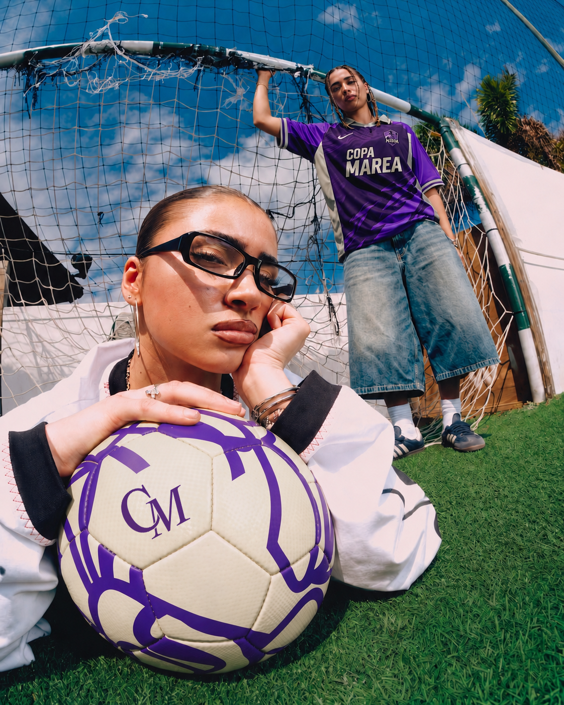
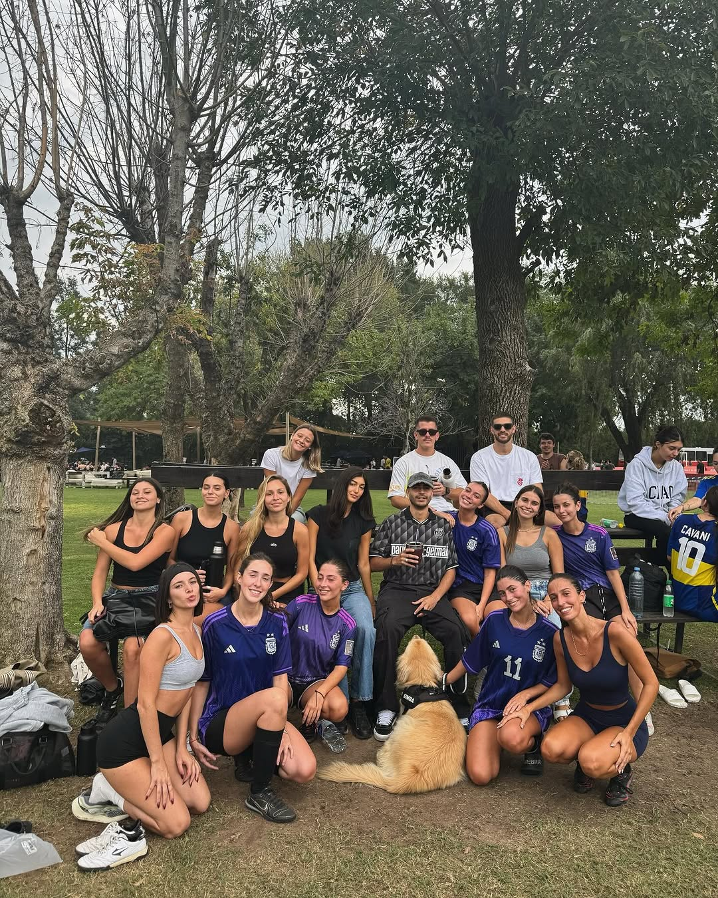
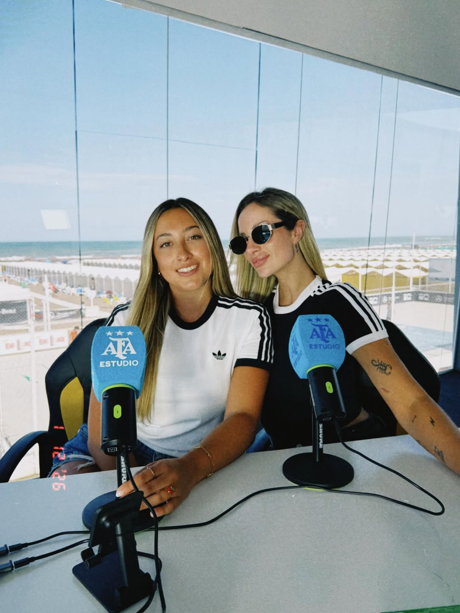
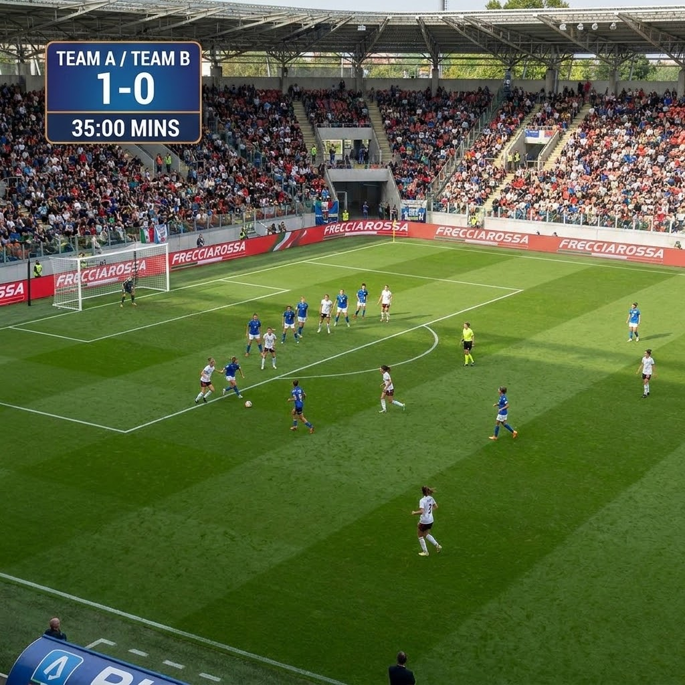
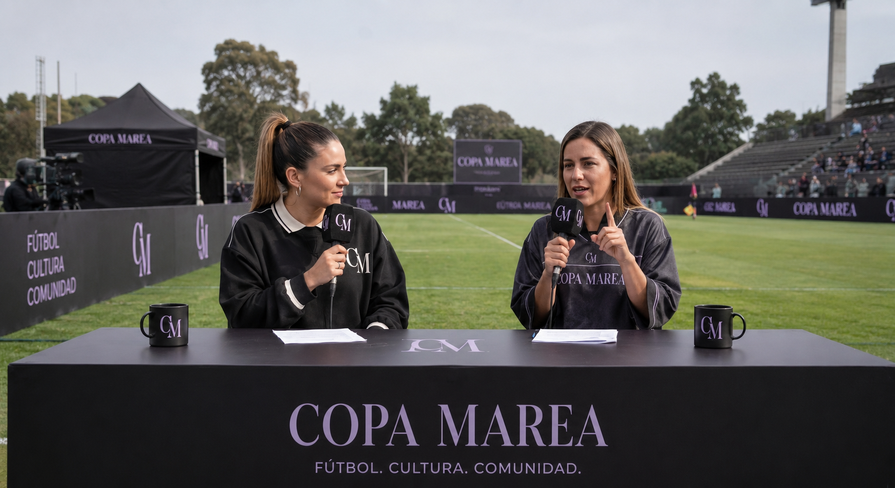

More than a game.
Copa Marea is the new wave of women's football: a platform for culture, community and content. Where brands don't sponsor, they're part of the scene.
Women's football
is here, not a promise.
Women's sport is at its highest growth point ever: massive audiences, rising brand investment and a young community that rewards those who join early. And 2026 is a World Cup year: football is back at the center of culture.
Sources: Deloitte (2025) · McKinsey (2024) · FIFA (2023) · Wasserman · The Collective (2024).
The undeniable boom
Women's sport is growing at record pace, drawing massive audiences and a brand loyalty that men's sport no longer offers with the same strength.
2026 World Cup fever
The first 48-team World Cup puts football center stage. And the road continues: the 2027 Women's World Cup is in Brazil, the first time in South America.
An underserved niche
There's no format that combines women's football with social content. That white space is the opportunity: getting there before everyone.
Women reward the brands that back women's football
Among women who are sports fans:
Projected commercial investment in women's sport for 2025 tops US$2.35B.
Source: Wasserman · The Collective, "The New Economy of Sports" (2024), 35,000+ respondents. Projected investment: Deloitte (2025).
A tournament you
watch and share.
A women's football tournament with teams led by influencer captains, where each captain builds her team and competes for weeks. It's not an event you cover: it's a platform that generates content all the time.

Real competition
Real teams, real matches, a cup on the line. The sporting thrill is the engine for everything else.
Social storytelling
Each captain brings her community. The tournament is told before, during and after, in Gen Z's code.
Organic integration
Brands don't show up stuck on the side: they live inside the flow of the event and the content, naturally.
Who's it for?
To Martina and her world. 23, an advanced student or recent grad, Buenos Aires. She plays football with her friends and lives on social media consuming sports lifestyle. She wants to be a protagonist, not just a spectator.

Plays amateur tournaments with her friends. Spends time on social media consuming vlogs and sports lifestyle content.
Finding sports spaces with a real quality experience. She feels women's tournaments are often left in the background.
She's drawn to brands that "do" rather than just "say": that genuinely support women and offer her experiences.
Five teams
already confirmed.
Real communities, with their own captains and followers. Each team comes in with its audience already built.

CF Team
Captain · Camilita Fernández@cfteamclub
Muñecas FC
Confirmed team@munecasfc
Actrices FC
Confirmed team@actoresfc_
Oxen
Confirmed team@oxenfutbol
AFA Studio
Confirmed team@afa_estudio
Camilita Fernández.
The undisputed reference of digital women's sportainment joins as official host of Copa Marea. Leader of CF Team and content creator, she brings a genuine connection with the Gen Z football community, with experience hosting events like the Coscu Army Awards and Parense de Manos.
Her channel will host the final's broadcast, integrating into the multiplatform ecosystem to guarantee massive reach.
A month of adrenaline.
Continuous competition across weekends, with a journey designed to build tension, story and content at every stage.
2 groups, semis and final
Chosen by the captain
One matchday per weekend
Prize and live streaming
Registration and team building by the captains.
Group stage: 3 matches per team, top 2 advance.
Semifinals in a single matchday with the qualifiers.
Grand final streamed live.
Competition and prize in one weekend. The tournament's climax turned into a complete experience.
Live streaming
The climax broadcast with host, commentators and multicamera HD production.
Prize handover
Trophy and symbolic key to the 0km car for the champion team, with the automotive brand present.
A brand-new 0km car for the champion team raises the competitive level and positions the tournament as aspirational. The automotive brand integrates throughout the tournament, activations, challenges and pitch-side presence, with content around the prize before, during and after.


A ground worthy of the tournament, built for competition and content. Everything in one place.
The tide is rising.
First, what we guarantee: a high volume of vertical content on our own channels. Then the upside: the creator protagonists amplify and add recognizable faces. The base doesn't depend on virality, that's the extra.
Clips for TikTok and Instagram
Host's channel, thousands simultaneously
4 tournament matchdays
Across the campaign
Combined followers of the 12-20 protagonists
* Estimated projection based on the final creator lineup and the organic performance of the accounts. ** Potential reachable audience, not guaranteed reach: the sum of the protagonists' followers as a theoretical ceiling.
Brands don't sponsor.
They're part of the scene.
Naming, experiential activations, sampling, photo ops and native content. The brand lives inside the event's culture, not as a logo stuck on the side.
Warrior Mode.
BetWarrior recognizes the fiercest players and actions of Copa Marea: recoveries, last-line clearances, saves, blocks and the moments when a team resists until the end.
BetWarrior x
Copa Marea.
The proposal positions BetWarrior as the brand that recognizes attitude, resistance and the best defensive actions of the tournament.

Warrior Plays
1 reel per matchday - 4 reels total. A compilation of the fiercest actions of each date: clearances, tackles, recoveries, blocks and key saves.
Suggested close: presented by BetWarriorBetWarrior Player of the Final
Award for the strongest defensive player of the final, including defenders and goalkeepers. Pitch delivery, official photo, short interview, streaming mention and social announcement.
Final moment
BetWarrior Stories per Matchday
1 story sequence per matchday - 4 total. Matchday opening, nominated defensive players, community poll, winner announcement and redirect to the Warrior Plays reel.
Community vote
Warrior Radar
Graphic content with defensive stats from each date: saves, recoveries, blocks, clean sheets and goals conceded. Carousel or stories, subject to production data capture.
Stats contentChoose how to get in.
Three participation levels, designed for different goals and budgets. Each one defines your presence on the pitch, in the content and in the broadcast.
Each level includes everything from the previous one, plus its own. Choose based on your goal and budget.
Your brand present and visible at the tournament, with base content for social.
- Logo at the venue + sponsors board
- 2 clips for social + 2 official mentions
- Presence in the final's broadcast
Standout presence on pitch and screen, plus physical activation at the venue.
- Behind the goals + logo on shorts
- On-screen bug, Play of the Day and goal clips
- 5 clips + 1 Marea Capsule + sampling and photo ops
Maximum presence and category exclusivity: the brand that owns the scene.
- Logo on jersey, prime sidelines and scoreboard
- "Presented by" in replays and Play of the Match
- 10 clips + 2 Capsules + own stand
Indicative prices per brand · category exclusivity · each participation is tailor-made. The detail, activation by activation, is below.
How it looks · everything your brand can activateFour territories, with real examples of how your brand looks in each. The label shows from which level each activation is included; your level adds everything from the previous ones.

On the pitch
- Logo on venue signage Friend
- Post-match press backdrop Friend
- Behind the goals Lead
- Logo on shorts Lead
- Pitch sidelines (prime) Star
- Logo on jersey Star
In the final's broadcast
- Logo on sponsors board + mention Friend
- Branded goal clips Lead
- Rotating on-screen bug Lead
- Play of the Day Lead
- Permanent logo on scoreboard Star
- Replay and Play of the Match Star
In the content

At the venue · experiential
- Product sampling Lead
- Branded photo ops Lead
- Participatory dynamics Lead
- Activation space / own stand Star
Native content formats designed so every type of brand finds its place within the tournament's story.
Mic'd Up
We mic up a player during warm-up or the post-match: humor, intimacy and the team's vibe.
Ideal: drinks · lifestyleProfiles
1-minute documentary capsules with the players' stories. Humanizes and builds empathy.
Ideal: purpose-driven brandsTunnel Fits
Lifestyle reels: how players arrive at the ground, sporty and urban looks. Fashion + sport.
Ideal: apparel · accessoriesCinematic Highlights
Slow-motion reels focused on the details: the sweat, the intensity, the hugs, the impact on the turf.
Ideal: sportswear · cars
Join the
first wave.
Copa Marea is the way to enter women's football in the World Cup year, before everyone. Let's design together how your brand takes part.